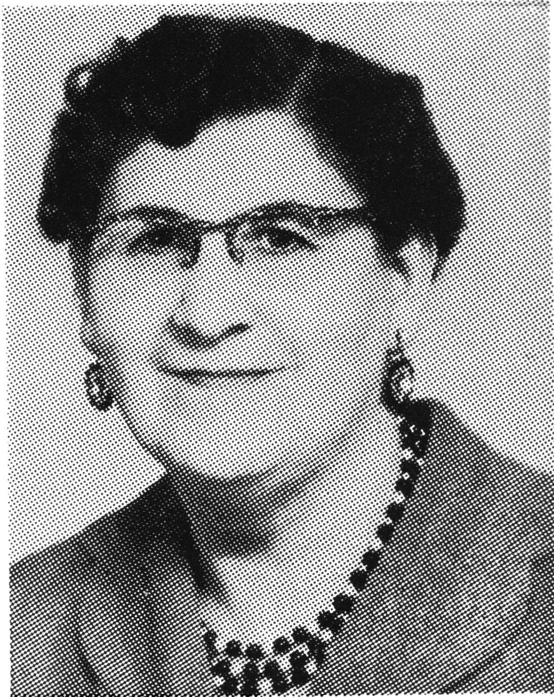
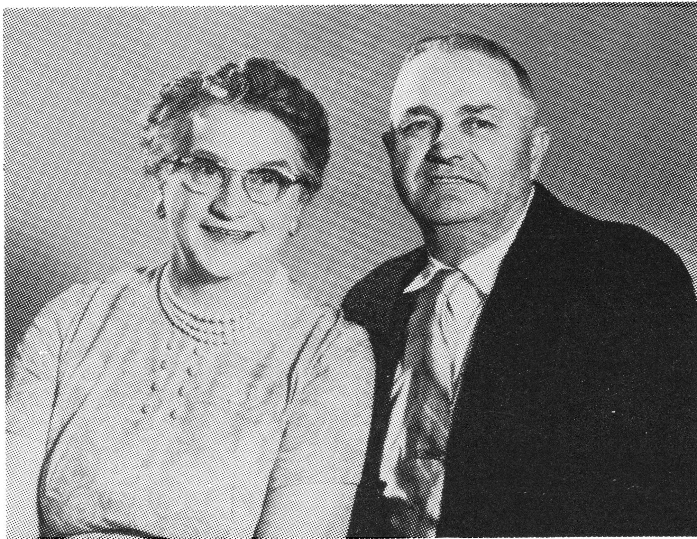

PIERRE L'HEUREUX
Pierre, Moise and Sophie's fourteenth living child, was born on May 15, 1901 on Sec. 22-48-17-W3rd, Northwest Territories.
In order to keep St. Michel's School enrollment up so it wouldn't be closed, Dad started school at the age of 5. In later years, he stayed with his brother, Paul, and Henri Esquirol, to attend Lavigne School.
Dad and his brothers could think of all sorts of mischief to get into. He told us of the time that they played a trick on Grandma which did not have such a good ending for them. Grandma had made a huge, iced, Christmas cake consisting of four layers. The boys took off the top layer and ate the centre. Grandma wasn't thrilled at all but had the last laugh as the boys watched the others eat cake on Christmas Day, knowing that they could not partake of some.
Dad obtained his first job at the age of 18 from a Kerrobert farmer. It was hard enough to get used to the bald prairie, but when a wind storm undid the stooking he had done on 80 acres, he decided that he had had quite enough and headed off to the salt mines in Fusilier, Saskatchewan until 1921. He then worked in the logging camps in Golden, British Columbia.

While in B.C., Dad remembered that his brother, Leonidas, had been born in the mountains, in a place called Donald. His inquiries soon led him to an old timer who directed him toward the L'Heureux Shack (Frenchie's Place). Dad was quite excited at seeing his parent's previous home.
The snow began to fall, so he and Eli Carriere moved on to Idaho, where they worked in logging camps. When thirth-six inches of snow fell, they decided to move on again, first to Portland, Oregon, where the weather was just like summer, then onto Kelso, which was just being formed into a town.
He left the States in the fall of 1922, and worked on the CNR section at Vawn. He stayed with his sister and brother-in-law, the LaClares. Dad returned home and married his sweetheart, Annie Lavoie, on January 1, 1924.

(Annie - first wife)
He bought the quarter section of land that he had been born on from Grandpa Moise. He proceeded to build a little cottage-type home along the creek. This spot is where their first three children were born, Robert, Therese and Mederic. Little Therese died at the age of six months in Dad's arms on the way to the hospital. That must have been a very trying time for him. We felt that we knew her as they spoke often about her.
Dad worked for Grandpa on the ranch, his wages going toward his land purchase. Money was scarce so Dad started his first money-making venture by getting his father to let him milk some wild cows. Grandpa laughed at him and told him that if he wanted to break them in to go ahead.
On his next trip to Cochin, he approached Mr. Pirot at the store to see if he would like to buy his butter. Mr. Pirot agreed to try a sample. Dad and Mom were pretty excited and it didn't take long for Mom to churn some up and bring it into the store. When the store owner tried the butter, he was thrilled and said he would buy all that they could produce! I don't imagine that this thrill was as great as my mother's as she shopped for groceries in the store. The more cows Dad broke in, the more butter Mom would make. They finally had a bit of money!
His second money making venture was a little more exciting as he started fishing with his friend, Alcide Boyer; well, poaching might be the right word for it. Dad had bought Uncle Paul's nets and jigger which had been used on Slave Lake, Alberta. They sold their fish by the wagonload to Mr. Dupuis from Cut Knife, at 5 cents a pound. A load would bring in about $125.00. They had a few close calls of getting caught.
When the Parish of St. Leon decided to build a new church in the now called Hamlet of Jackfish, Dad and Mom, adverturers that they were, thought that it might be a good idea to start a small store. They sold their land back to Grandpa Moise and bought one acre of land from Uncle Leonidas, across from the new church. He then moved his house to Jackfish in 1928 and put up an addition to be the store and post office. On May 8, 1928, Dad became the new postmaster, and later, on July 1, 1934, got the mail hauling contract from Jackfish to Meota which was twice a week. The business flourished and soon he had to expand.
He went north to the Lavigne sawmill, cut some logs, hauled them in to the mill and got them cut on share. At the same time, he also had some cut for Aunt Anna Day who wanted to build a house in Jackfish. After hauling all this wood home, he hired a carpenter by the name of Mr. Giphrie from St. Hypolyte as well as some local help to build the new addition. It made the house so roomy! Business kept getting better and they had to hire help. For some nieces and other local young ladies, it was to be their first employment. Mom didn't mind having the extra help, either!
Dad wasn't satisfied with just running the store and post office. He had the opportunity to buy a quarter section near the Ness School and paid $1500.00 for it. We broke most of it ourselves as only the prairie area had been broke. Later, he rented a quarter section from Mr. Fox, and also rented the Jim Colwell place which he used for hay and pasture. He eventually bought Mr. Fox's place and we broke that one, too. As a store keeper-come small farmer, he did alright. He soon owned 45 head of cattle.
Dad worked with horses much of the time and they were his pride and joy. They always had to be well-matched. He did not keep plugs, but mainly black, evenly matched horses, sixteen in number. They always had to shine and pull evenly. I guess I could say that his horses were to him what an expensive car would be to us today.
Soon Dad had the chance to buy a pool room, complete with three pool tables. He moved it onto our property. There was not much to do in those days and all welcomed the new form of recreation.
When the depression hit Mom and Dad found it very hard owning the store as they were related to 75% of the population. It was too hard to say "NO" and could not turn people away. People's charge accounts rose; they traded in wood, eggs, butter, etc. The natives became some of his better customers as they never charged but paid cash or traded in fish, furs, wild meat and wood. They were very honest.
In 1936, the family encountered five mastoid ear operations and Mom had to have her gallbladder removed. With the mounting hospital and doctor bills, plus the slow business, Dad was forced to sell his favorite team of mares to Bob Tait of Meota for $200.00. Bob had been wanting this beautiful, black team that weighed in at 1800 pounds each. Since the going price for horses at that time was only $50.00 per horse, Dad found himself fortunate to get such a good price.
When Dad had business to attend to in Meota, he usually found himself with one or more passengers. Dad also became Father Coursal's chauffer and right hand man. He often had bishops, priests and nuns riding with him. People would send him for Nurse Brooks should the need arise and Dad became the local dentist in those days with a set of pliers given to him by Dentist Goodwin.
Our place became a meeting place, where people would come to use the phone, listen to the Gang Busters, Al Capon, and boxing matches with Joe Louis on the Battery Radio, or just to talk. In 1941, Dad sold the store to Nap Carriere but kept the post office and pool room. He also rented his land to Damase and Emile Arcand. In 1942, he drove the Co-op Creamery truck while Mom took care of the post office and mail route. In 1945, he returned to farming and bought a tractor with steel wheels. Later, he got one with rubber wheels, which we found to be a real treat. He rented more land and bought a self-propellled combine and a new oneway disc press drill. Dad acquired a two ton Dodge truck from the Coca-Cola Co., and remodeled it with the help of Nap Carriere. His 200 bushel grain box was in demand, for the surrounding grain farmers now had a way to haul their crosp easily to the elevators. At first, the loading and unloading was all done by scoop and shovel, but later acquired a power take off auger, which attached to the bottom of the box. It was a great improvement.
Pierre and Annie were on their feet once more. In 1957, Mom began feeling quite ill and was sent to a specialist in Saskatoon. She was diagnosed as having cancer, with six to twelve months to live. Dad was devastated and decided that a move closer to the doctors and hospital was in order. He sold all he owned in Jackfish and moved to North Battleford in the spring of 1957. In June of that year, their son, Laurier, was killed in a power line accident at the age of 23. Mom was in the hospital at the time and only lived until January of 1958.
It was a very hard time for the family. Dad knew that with two children still at home, he must keep a good head. He gained work as a warden for a few years, and remarried Selina (Lena) Lavigne. Dad had a heart attack, in 1962 and decided that they should take life a little easier. They moved into Lena's smaller home. He pulled through several more heart attacks, always fooling the doctors by making a comeback.
Dad turned his hobby, furniture refinishing, into a money making venture with a small shop in the back yard. He loved fishing, and made the newspapers by catching the first Brook trout in this area. They joined the Seniors' Club where they played cards and where Dad earned the nickname "Bingo Pete" by being a lucky player. They also loved to travel and made trips often to see their children in the western provinces.
Lena died of a heart attack in 1980 and Dad was left alone again. He now travelled with his married children or flew to his destinations.
After another severe heart attack, he came to live with us in Aquadeo. He kept active but required oxygen occasionally. He lost his last fight with death at the age of 82 in 1983. He is buried in the Jackfish cemetary.
ROBERT L'HEUREUX
Pierre L'Heureux
| NAME | BORN | MARRIED | SPOUSE | BOY | GIRL | DIED |
|---|---|---|---|---|---|---|
| Pierre | May 15, 1901 | Jan. 1, 1924 | Annie Lavoie | 4 | 5 | |
| Annie | Jan. 12, 1958 | |||||
| Remarried | , 1960 | Selina Lavigne | 0 | 0 | Sept. 27, 1980 | |
| Pierre | Nov. 16, 1983 | |||||
| PIERRE'S FAMILY | ||||||
| Robert | Sept. 7, 1924 | Dec. , 1944 | Jeanne Lepage | 2 | 2 | |
| Therese | , 1925 | 6 months old | ||||
| Medric | July 8, 1927 | Sept. 1, 1956 | Lois Dawe | 2 | 2 | |
| Therese | Feb. 24, 1930 | Jan. 30, 1960 | Gordon Johnston | 2 | 2 | |
| Gilberthe | Jan. 5, 1932 | June , 1953 | Frank Flasch | 3 | 2 | |
| Laurie | Aug. 2, 1933 | June 18, 1957 | ||||
| Corrine | Apr. 28, 1935 | Sept. 1, 1956 | Raymond Ouellette | 3 | 2 | |
| Jaqueline | Mar. 3, 1938 | Oct. 1, 1960 | Leo Arsenault | 2 | 2 | |
| Remarried | , 1972 | Jack Cameron | 3 | 3 | ||
| Antonio | Oct. 25, 1944 | Nov. 28, 1964 | Lynn Bleaken | 2 | 1 | |
| Pierre's Grandchildren | ||||||
| ROBERT'S FAMILY | ||||||
| Louise | Nov. 25, 1945 | Nov. 1, 1969 | Russel Bohing | 1 | 1 | |
| Remarried | Apr. 27, 1985 | Emile Aubichon | 0 | 0 | ||
| Huguette | Sept. 5, 1947 | June 28, 1969 | William Cederwell | 1 | 1 | |
| Charles | Dec. 31, 1949 | Aug. 29, 1970 | Pauline Bru | 2 | 0 | |
| Remarried | Virginia Piorde | 1 | 1 | |||
| Raymond | Jan. 10, 1953 | June 30, 1973 | Valerie Murphy | 3 | 0 | |
| Pierre's Great Grandchildren | ||||||
| Robert's Grandchildren | ||||||
| LOUISE'S FAMILY | ||||||
| Renee | Apr. 21, 1970 | |||||
| Gene | Mar. 24, 1973 | |||||
| HUGUETTE'S FAMILY | ||||||
| Karen | Dec. 18, 1969 | |||||
| Jason | Apr. 4, 1972 | |||||
| CHARLES' FAMILY | ||||||
| Miguel | Dec. 28, 1970 | |||||
| Correy | July 24, 1974 | |||||
| Carly | June 29, 1978 | |||||
| Chad | Aug. 13, 1979 | |||||
| RAYMOND'S FAMILY | ||||||
| Regan | Sept. 1, 1974 | |||||
| Jeffrey | Apr. 18, 1978 | |||||
| Brett | Dec. 24, 1984 | |||||
| Pierre's Grandchildren | ||||||
| MEDERIC'S FAMILY | ||||||
| Laurier | Sept. 7, 1957 | Nov. 10, 1977 | Patricia Stevens | 1 | 2 | |
| Kenneth | Nov. 16, 1958 | June 28, 1980 | Corinne Caharel | 0 | 0 | |
| Sandra | Jan. 28, 1960 | Sept. 15, 1979 | John Culdager | 2 | 0 | |
| Christine | July 23, 1965 | Nov. 10, 1984 | Lawrence Armstrong | 1 | ||
| Pierre's Great Grandchildren | ||||||
| Mederic's Grandchildren | ||||||
| LAURIER'S FAMILY | ||||||
| Lynn | Mar. 23, 1975 | |||||
| David | Apr. 25, 1979 | |||||
| Rebecca | Oct. 4, 1980 | |||||
| SANDRA'S FAMILY | ||||||
| Ryan | Aug. 21, 1982 | |||||
| Andrew | Jan. 18, 1986 | |||||
| CHRISTINE'S FAMILY | ||||||
| Tamara | Jan. 13, 1986 | |||||
| Pierre's Grandchildren | ||||||
| THERESE'S FAMILY | ||||||
| Suzanne | July 15, 1961 | |||||
| Marc | Oct. 2, 1962 | |||||
| Blair | Mar. 3, 1966 | |||||
| Nichole | Oct. 3, 1970 | |||||
| GILBERTHE'S FAMILY | ||||||
| Daniel | Apr. 21, 1954 | , 1978 | ||||
| Joanne | July 30, 1955 | 1 | ||||
| Frances | Nov. 9, 1956 | , 1978 | Mark Girard | 0 | 2 | |
| David | Apr. 14, 1959 | , 1979 | Anna Chapman | |||
| Richard | June 8, 1960 | June 22, 1977 | ||||
| Pierre's Great Grandchildren | ||||||
| Gilberthe's Grandchildren | ||||||
| JOANNE'S FAMILY | ||||||
| Troy | Dec. 18, 1974 | |||||
| FRANCES' FAMILY | ||||||
| Carly | Jan. 22, 1980 | |||||
| Cassie | May 8, 1982 | |||||
| Patrisha | Nov. 21, 1985 | |||||
| Pierre's Grandchildren | ||||||
| CORINNE'S FAMILY | ||||||
| Denis | June 16, 1957 | July 27, 1979 | Brenda Schmidek | 0 | 2 | |
| Suzanne | Aug. 15, 1958 | Apr. 26, 1980 | John Little | 1 | 0 | |
| Robert | Sept. 1, 1960 | Mar. 26, 1983 | Margaret Lorenmoore | |||
| Annette | July 26, 1962 | |||||
| Guy | Mar. 3, 1965 | |||||
| Pierre's Great Grandchildren | ||||||
| Corinne's Grandchildren | ||||||
| DENIS' FAMILY | ||||||
| Nicole | Nov. 24, 1979 | |||||
| Charmaine | Aug. 23, 1982 | |||||
| SUZANNE'S FAMILY | ||||||
| Taylor | June 13, 1984 | |||||
| Pierre's Grandchildren | ||||||
| JACQUELINE'S FAMILY (adopted by Jack Cameron) | ||||||
| David | Sept. 16, 1961 | Apr. 4, 1986 | Tara Lynn Schumacher | 1 | ||
| Michelle | Dec. 28, 1962 | |||||
| Marie-Louise | Dec. 31, 1963 | Brian Greefel | ||||
| Dwight | Aug. 14, 1966 | |||||
| Lianne | May 5, 1973 | |||||
| Cindy (step) | Oct. 31, 1956 | July 9, 1983 | Ryan Lyle | |||
| Jeffrey (step) | Aug. 27, 1959 | |||||
| James (step) | June 6, 1961 | July , 1985 | Karla Roberts | 1 | 0 | |
| Lisa (step) | Feb. 12, 1965 | , 1984 | John Sloat | |||
| Thomas (step) | Apr. 16, 1967 | |||||
| Pierre's Great Grandchildren | ||||||
| Jacqueline's Grandchildren | ||||||
| DAVID'S FAMILY | ||||||
| Danielle | ||||||
| JAMES' FAMILY | ||||||
| Jayson | ||||||
| Pierre's Grandchildren | ||||||
| ANTONIO'S FAMILY | ||||||
| Christopher | May 23, 1972 | |||||
| Patrick | Aug. 27, 1974 | |||||
| Kimberley | Apr. 26, 1965 | |||||
| TOTAL DESCENDANTS | 101 |
| LIVING | 95 |
| DECEASED | 6 |